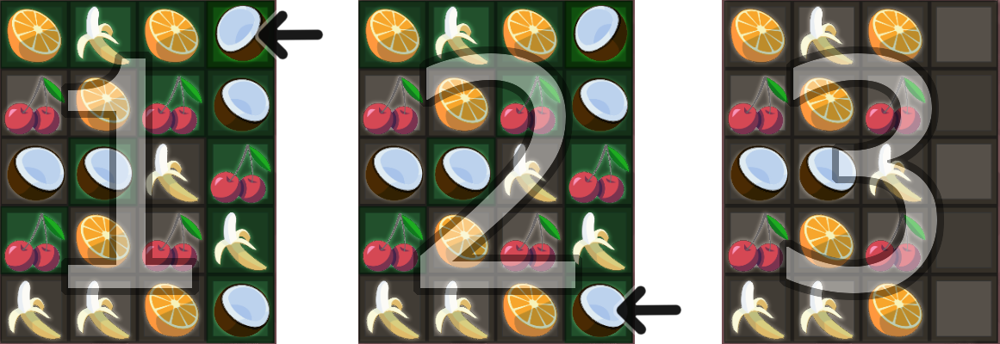

W tej grze masz za zadanie zebrać wszystkie owoce z planszy, ale nie jest to proste!
Klikasz na owocka i w ten sposób zaznaczasz go. Następnie klikasz na drugiego takiego samego owocka, który znajduje się w tej samej linii. Może to być ta sama kolumna, wiersz albo przekątna. Po kliknięciu drugiego owocka, te dwa owocki, oraz wszystkie pomiędzy nimi, znikają. Na poniższym przykładzie zaznaczam kokosa w prawym górnym rogu(1). Następnie, po kliknięciu na dolnego prawego kokosa(2) - wisienki, kokos oraz banan znajdujące się pomiędzy dwoma wybranymi przeze mnie kokosami zostają zbite razem z nimi(3).
Można zbijać owoce na różne sposoby, w różnej kolejności i różnie dobierać pary owoców, przez co powstaje multum możliwości. Proste plansze można przejść na wiele różnych sposobów. W trudniejszych planszach trzeba więcej pomyśleć, bo losowe klikanie może szybko doprowadzić nas do sytuacji, w której na planszy zostaną nam owoce nie do zbicia. Żeby przejść poziom i otrzymać trzy gwiazdki, trzeba zbić wszystkie owoce. Jeśli nie masz już możliwości przejścia planszy, kliknij na okrągłą strzałkę, aby zacząć poziom od początku.
Za zbicie wszystkich owoców otrzymujesz ★★★. Jeśli na planszy zostanie jeden owoc, otrzymujesz ★★, a jak zostaną dwa owoce, któwych nie można już zbić, dostajesz ★.